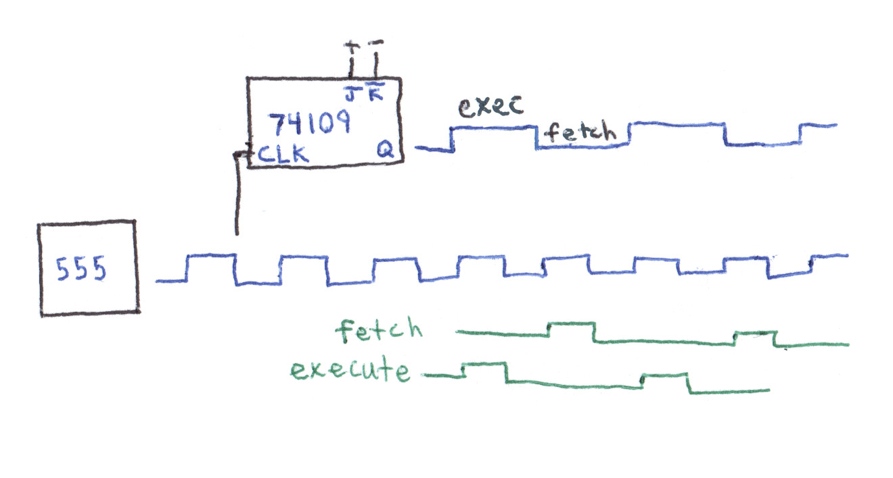
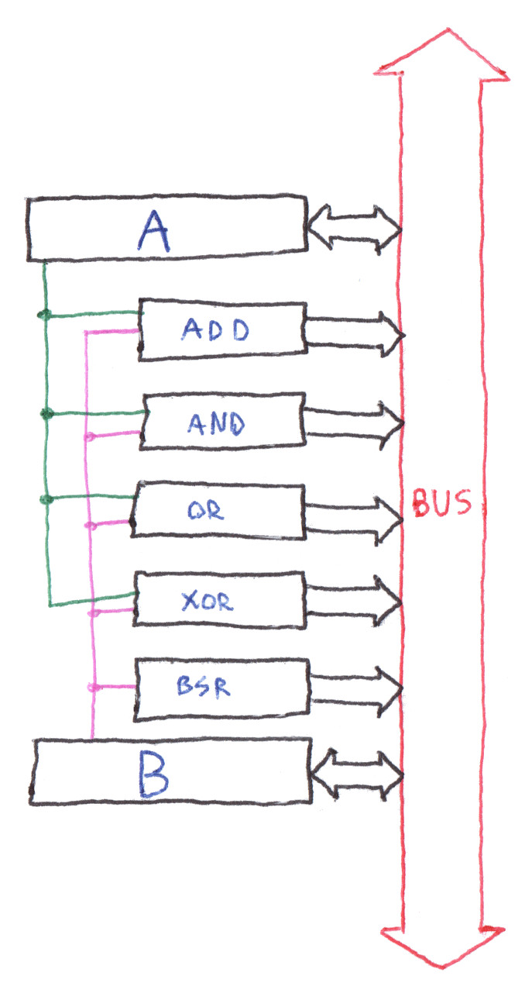
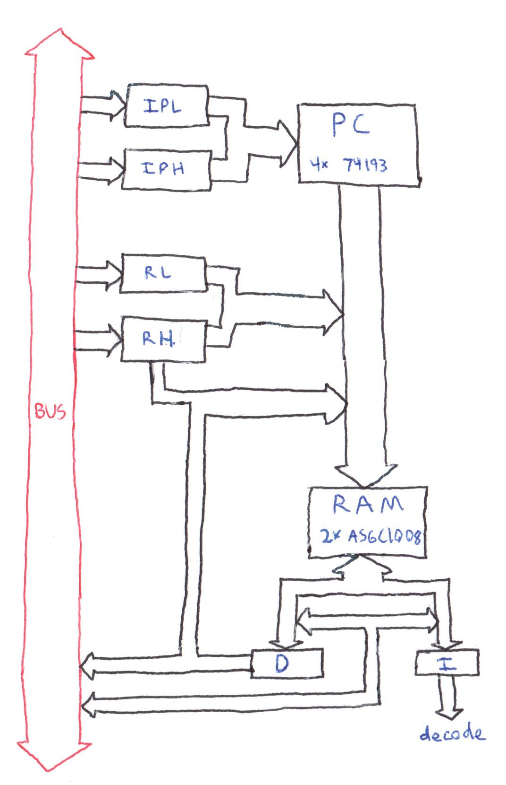

8-bit computer
Inspired by the work of people on the Homebuilt CPU web ring, I decided to design and build my own 8-bit computer from scratch.
First Steps
The design of the CPU is loosely inspired by Ben Eater's 4/8-bit breadboard computer. His design uses 74HCxx series logic chips on breadboards. It's built around an 8-bit data bus but only supports 4-bit memory addressing. While it works well as a teaching tool, his computer isn't really usable. The 4-bit memory addressing means that it's only capable of 16 unique instructions, and the "ALU" can do addition, nothing else.
I set out to design and build my own breadboard computer from scratch. Almost all of the logic chips used are from the 74HCxx family, with some exceptions. This computer would be built around an 8-bit data bus, running down the middle of the construction on breadboard bus bars. Memory addressing would be 16 bits wide in order to support far more complex programs than would otherwise be allowed.
Design
The main idea behind the architecture is that for each instruction, some portion of the computer outputs a data word onto the bus and another portion of the computer uses or stores it. For example, to store a value in the A register, the computer would output an immediate value onto the bus and the A register would latch it in. Similarly, to store the result of addition to a memory location, the addition section of the ALU would output onto the bus, and the memory circuitry would store it.
Clock cycles
Each clock cycle, the computer alternates between doing one of two operations: fetch and execute. For the fetch cycle, most of the computer is disabled and the program counter is fed into the memory address. The output of memory (16 bits) is saved in two 8-bit registers -- one for instruction ("I") and the other for data ("D"). The program counter is then incremented.
During the execute cycle, the instruction is fed into decoding logic that operates the computer's control signals. Once the new state has stabilized, any registers/memory that need to be are latched in.
Instructions
The 8-bit instruction register ("I") holds the machine's current instruction. The instruction is divided into two 4-bit sections. The first of these dictates which part of the computer outputs onto the bus, and the second dictates which part uses the data. These sections are fed into two separate 4-to-16 decoders that translate a 4-bit value into the activation of one of 16 control lines. The control lines from both decoders connect all across the computer, mainly driving tri-state bus buffers (output side) and the clock signals on registers (input side).
| I register | ----------------- |7|6|5|4|3|2|1|0| ----------------- | out | in |
ALU
The ALU is perhaps the most straightforward subsystem in the computer. It has two 8-bit registers called "A" and "B". These registers are directly wired to each of five math/logic operators: addition, AND, OR, XOR, and bitshift right. Each of these will always use the A and B registers as its two (or sometimes one) operands.
ALU operations are carried out by loading values into the A and B registers and then using the output of one of the operators. To AND two values together, one would load each of the values into the A and B registers and then, in a separate instruction, put the output of the AND operation to the bus.
Memory
The memory subsystem is separate from the main data bus because it's 16 bits wide for both address and data. It uses two address registers ("RH" and "RL" for the high and low 8 bits of the address, respectively) and two data registers (I and D, described above) to interface with the main 8-bit data bus. Every time memory is accessed (for instruction fetch or data access), an address is fed through the 16-bit memory address bus and into the memory chips. For instruction fetches, the address comes from the program counter. For data access, one of two different addressing modes can be used -- combining the 8-bit RH and RL registers or combining the RH register with the D (immediate value) register. Once the address has been selected, data can either be loaded from the bus into memory or read fron memory and put on the bus. Addressing modes to access both the low (data) and high (instruction) bytes of the memory contents are available.
Program counter
The program counter is a 16-bit counter circuit with reset and preset capabilities. It is incremented at the end of every fetch cycle. Jumps are done using two 8-bit registers -- "IPH" and "IPL" for the high and low 8 bits of the counter, respectively. These registers are loaded and a conditional jump instruction is executed.
I/O
Physically, the I/O circuitry is not combined with the rest of the computer. The I/O breadboards are connected via ribbon cables to the main bus, control signals, and power. I/O is used in fundamentally the same way as any other part of the computer. Modules can be selected to either output data to or take data from the bus.
Build
After reasonably complete schematics were drawn, I wrote up a bill of materials. This included about 15 different types of 74HCxx integrated circuits, RAM chips, 555 timers, a lot of LEDs, 20 breadboards, 250 feet of wire, and some miscellaneous components. The total cost was around $150.
All of the ICs and passives were ordered from DigiKey. While their prices for genuine Texas Instruments 74HCxx parts were rather excessive, it was much easier to get the parts from a supplier rather than from eBay or overseas. I got the wire from Amazon and the breadboards too for $2 apiece. They're cheap in quality but adequate for this project, especially considering that good breadboards run for around $6-$7. I found LEDs, an LCD, and a PS/2 keyboard adapter on eBay for good prices.
Once all the parts had arrived and had been inventoried, it was time to begin building. I started with the clock circuitry, because it would aid in testing the rest of the machine. I then worked down through the memory circuitry. It was the most difficult to lay out -- the 16-bit wide data bus took up a lot of valuable space. The workflow went something like this: assemble breadboards; lay out and insert chips; bend, cut, strip, and insert all of the wires; insert LEDs. Next came the decode circutry, followed by the memory logic and the ALU. Once each individual section had been wired up and connected to the main bus, I started running wires from the instruction decode circuitry to the rest of the computer. Testing was performed along the way, of course, by manually twiddling with the registers and control lines.
Debugging
To be continued...